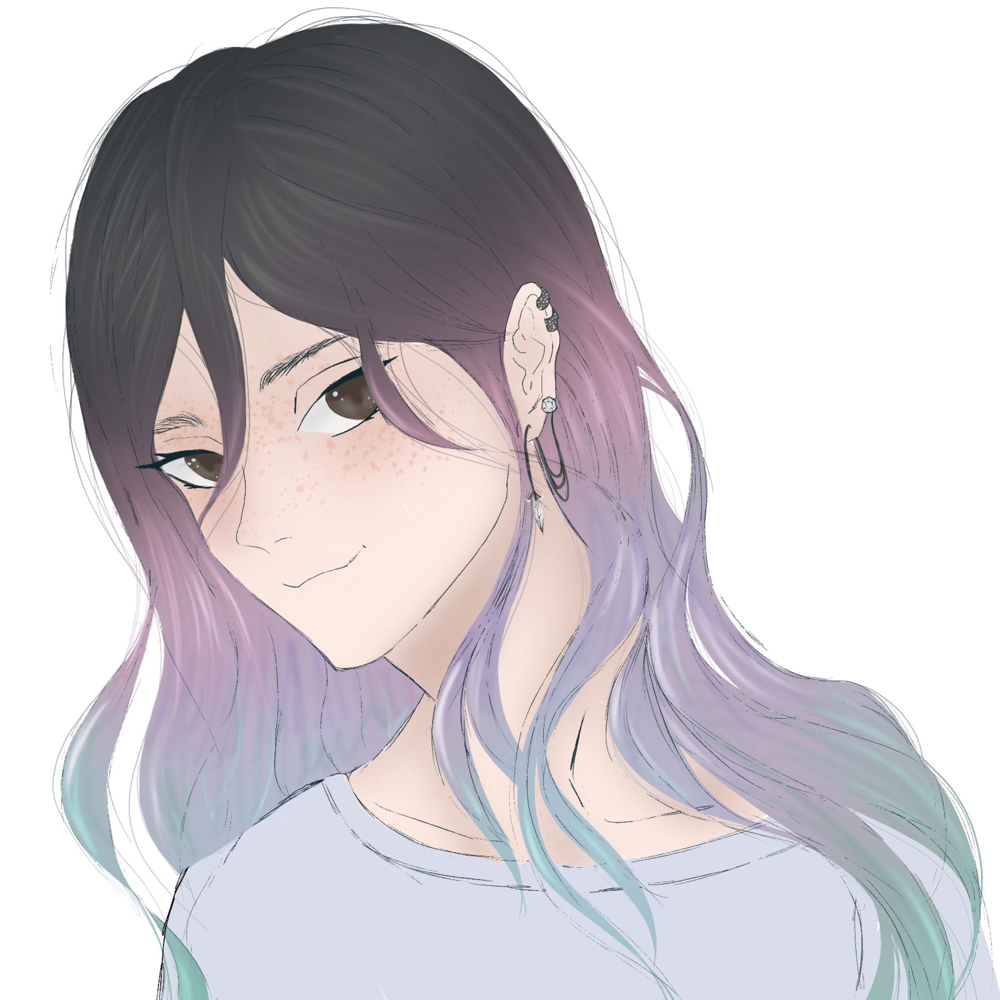

HELEN MINT

Yaş: 24
Doğum Tarihi: 03.11.1998
Burç: Akrep
MBTI: INTJ
Bölüm: Sinema ve Dijital Medya
Sınıf: 3
İlişki Durumu: Karışık
Köken: Yarı Yunan (Anne)
Kardeş: -
Saç Rengi: Siyah - Karışık
Göz Rengi: Kahve
Boy: 1.67
Kilo: 52
Kan Grubu: A+

- En sevdiği yemek çilekli yoğurttur.
- En sevdiği hayvan çitadır.
- En sevdiği şarkı Nights - Avicii.
- Favori rengi gül kurusudur.
- Webtoon okumayı çok sever.
- Mottosu: "Eğer herkes bir noktaysa, parlak bir nokta olmayı tercih ediyorum."
- En sevdiği dersi dijital film stüdyosudur.
- Balık alerjisi var ve kokusunu da hiç sevmiyor.
- İşini kaybetmekten çok korkar.
- Bir an önce mezun olmak istiyor.
- Bir köpeği var.
- Dedikodulardan tedirgin olur.
- Bol bol yolculuk yapar.
- Ünlü olmayı hiç istememişti.